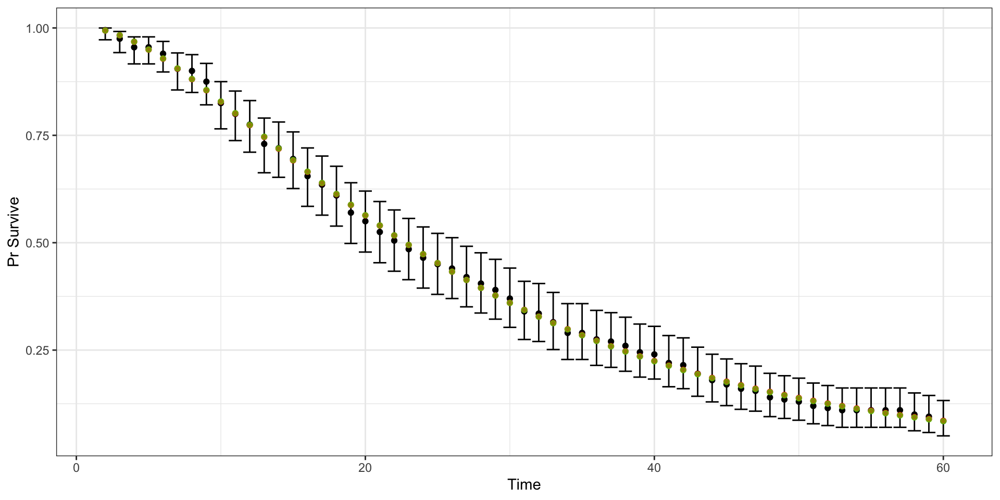

Calibration and validation
EPIB 676 session 13, McGill University
2024-10-10
R packages
Today
Model calibration
Concept
Deterministic methods
Bayesian methods
Model validation
Models combine multiple sources of evidence
Modeled outcomes are complex functions of multiple parameters
Model as a function
Estimating parameter values
Direct estimation: with primary data or published studies
Expert or data-informed estimation: using imperfect or semi-applicable data and/or expert opinion, develop reasonable estimates/uncertainty ranges
Calibration: use data on model outcomes to estimate model inputs (parameters)
Model as function 2
Calibration uses data on modeled outcomes to estimate model parameters (and sometimes model structure)
Calibration
Using data on outcomes to estimate parameters
Steps in model calibration
Derive calibration targets from real-world data
Structure model to produce analogous measures
Identify model parameters to be calibrated
- Usually, just a subset
Implement a calibration algorithm
Ad hoc
Optimization
Bayesian or approximately Bayesian
Hands on model calibration in R
Guided tutorial by DARTH working group
Eva Enns, Fernando Alarid-Escudero, and Caleb Easterly 2018
Calibration task

Calibrate p.Mets and p.DieMets by fitting to observed survival data
Target data
$Surv
Time Alive Pop value se lb ub
1 2 199 200 0.995 0.004987484 0.97245810 0.9998734
2 3 195 200 0.975 0.011039701 0.94262565 0.9918338
3 4 191 200 0.955 0.014658615 0.91629731 0.9792196
4 5 191 200 0.955 0.014658615 0.91629731 0.9792196
5 6 188 200 0.940 0.016792856 0.89753817 0.9686160
6 7 181 200 0.905 0.020733427 0.85562336 0.9418304
7 8 180 200 0.900 0.021213203 0.84978721 0.9378406
8 9 175 200 0.875 0.023385359 0.82102625 0.9174477
9 10 165 200 0.825 0.026867732 0.76511603 0.8749756
10 11 160 200 0.800 0.028284271 0.73777364 0.8531055
11 12 155 200 0.775 0.029527530 0.71076039 0.8308975
12 13 146 200 0.730 0.031392674 0.66284741 0.7901967
13 14 144 200 0.720 0.031749016 0.65231126 0.7810388
14 15 139 200 0.695 0.032555721 0.62613220 0.7579806
15 16 131 200 0.655 0.033613613 0.58469276 0.7206345
16 17 127 200 0.635 0.034042253 0.56416597 0.7017666
17 18 122 200 0.610 0.034489129 0.53867877 0.6780089
18 19 114 200 0.570 0.035007142 0.49827915 0.6396144
19 20 110 200 0.550 0.035178118 0.47824931 0.6202464
20 21 105 200 0.525 0.035311117 0.45336802 0.5958800
21 22 101 200 0.505 0.035353571 0.43358665 0.5762629
22 23 97 200 0.485 0.035339426 0.41391483 0.5565364
23 24 93 200 0.465 0.035268612 0.39435274 0.5367001
24 25 90 200 0.450 0.035178118 0.37975359 0.5217507
25 26 88 200 0.440 0.035099858 0.37005558 0.5117497
26 27 84 200 0.420 0.034899857 0.35074386 0.4916638
27 28 81 200 0.405 0.034711309 0.33633483 0.4765250
28 29 78 200 0.390 0.034489129 0.32199106 0.4613212
29 30 74 200 0.370 0.034139420 0.30296982 0.4409465
30 31 68 200 0.340 0.033496268 0.27466828 0.4101559
31 32 67 200 0.335 0.033374766 0.26997916 0.4049966
32 33 63 200 0.315 0.032846233 0.25130533 0.3842777
33 34 58 200 0.290 0.032085822 0.22815699 0.3581875
34 35 58 200 0.290 0.032085822 0.22815699 0.3581875
35 36 55 200 0.275 0.031573327 0.21437742 0.3424254
36 37 54 200 0.270 0.031392674 0.20980334 0.3371526
37 38 52 200 0.260 0.031016125 0.20068485 0.3265778
38 39 49 200 0.245 0.030411758 0.18708413 0.3106399
39 40 48 200 0.240 0.030199338 0.18257190 0.3053063
40 41 44 200 0.220 0.029291637 0.16463606 0.2838612
41 42 43 200 0.215 0.029049527 0.16018170 0.2784710
42 43 39 200 0.195 0.028015621 0.14249187 0.2567857
43 44 36 200 0.180 0.027166155 0.12936893 0.2403811
44 45 34 200 0.170 0.026561250 0.12069562 0.2293716
45 46 32 200 0.160 0.025922963 0.11208750 0.2182990
46 47 31 200 0.155 0.025590526 0.10780940 0.2127376
47 48 28 200 0.140 0.024535688 0.09508752 0.1959453
48 49 27 200 0.135 0.024163506 0.09088710 0.1903092
49 50 26 200 0.130 0.023780244 0.08670835 0.1846523
50 51 24 200 0.120 0.022978251 0.07842025 0.1732724
51 52 23 200 0.115 0.022558258 0.07431337 0.1675469
52 53 22 200 0.110 0.022124647 0.07023316 0.1617962
53 54 22 200 0.110 0.022124647 0.07023316 0.1617962
54 55 22 200 0.110 0.022124647 0.07023316 0.1617962
55 56 22 200 0.110 0.022124647 0.07023316 0.1617962
56 57 22 200 0.110 0.022124647 0.07023316 0.1617962
57 58 20 200 0.100 0.021213203 0.06215937 0.1502128
58 59 19 200 0.095 0.020733427 0.05816961 0.1443766
59 60 17 200 0.085 0.019719914 0.05029592 0.1326052Plot target data
Load and run model
Uncalibrated model vs. targets
Random search method
Specify parameter value range
Sample several sets (pairs) of parameters
Identify best-fitting set
- Minimize error/maximize goodness-of-fit
Latin hypercube sampling
Using partitions to ensuring samples are well-dispersed across the parameter space
Lots of variants
Can use uniform random method then ‘rescale’ to fit our range or distribution
Code: latin hypercube sampling
set.seed(1010)
param.names <- c("p.Mets","p.DieMets")
n.param <- length(param.names)
rs.n.samp <- 3000
# lower bound
lb <- c(p.Mets = 0.04, p.DieMets = 0.04)
# upper bound
ub <- c(p.Mets = 0.16, p.DieMets = 0.16)
# Sample unit Latin Hypercube (uniform random!)
m.lhs.unit <- lhs::randomLHS(rs.n.samp, n.param)
colnames(m.lhs.unit) <- param.namesPlot LHS samples (for random search calibration)
Rescale parameters
Could rescale to represent draws from other distributions using
qbeta(),qnorm(),qgamma(), etc.Could use the inverse CDF method for any non-standard distribution with defined CDF
Distribution of LHS-sampled params
Likelihood function
Asks, how likely is the modeled output given the calibration data?
Higher likelihood \(\rightarrow\) modeled output more consistent with calibration data
We’ll use a normal distribution for likelihood
For numerical stability, we compute log-likelihood
Why maximize log-likelihood?
Calibration identifies parameters that maximize total likelihood, product of the likelihood of each target
\[ A: \underset{\Theta}{\operatorname{argmax}} p(\textbf{x} \mid \Theta ) = \underset{\Theta}{\operatorname{argmax}} \prod_{i=1}^N p(x_i \mid \Theta) \]Equivalent to maximizing the sum of the log-likelihoods
\[ B: \underset{\Theta}{\operatorname{argmax}} \ln p(\textbf{x} \mid \Theta ) = \underset{\Theta}{\operatorname{argmax}}\sum_{i=1}^N \ln p(x_i \mid \Theta) \]
Floating point precision issues are less likely with B vs. A
Goodness-of-fit function
gof_norm_loglike <- function(
target_mean, #vector of mean for p(survive) by year (target)
target_sd, #vector of SD for p(survive) by year (target)
model_output #vector of modeled p(survive) by year
){
#Sum the log-likelihood of modeled output given target distribution
sum(dnorm(x = model_output,
mean = target_mean,
sd = target_sd,
log = TRUE))
}Calculates the log-likelihood of your survival probabilities given a likelihood distribution fit to your target
Random search: compute GOF for each parameter set
#vector to store log-likelihood (goodness of fit) for each
#. parameter set we generated with latin hypercube sampling
rs.loglike <- rep(0, rs.n.samp)
for (j in 1:rs.n.samp){
# Run model for a given parameter set
model.res = markov_crs(v.params = rs.param.samp[j, ])
# Calculate goodness-of-fit of model outputs to targets
# (log likelihood of the model output given the targets)
rs.loglike[j] = gof_norm_loglike(model_output = model.res$Surv,
target_mean = CRS.targets$Surv$value,
target_sd = CRS.targets$Surv$se)
}
head(rs.loglike)[1] 140.65501 -1027.43492 -158.43638 -67.54754 -175.99828 -1459.38907[1] 1.218134e+61 0.000000e+00 1.555804e-69 4.618221e-30 3.672143e-77
[6] 0.000000e+00Random search: best-fitting parameters
Goodness-of-fit maximized when p.DieMets = 0.1261285, p.Mets = 0.047762
Random search: calibrated model vs. target
rs_best_fit_params <- c(rs.calib.res[1, c("p.Mets", "p.DieMets")])
rs_best_fit_model <- markov_crs(rs_best_fit_params)
t_compare <- cbind(CRS.targets$Surv,
random_search = rs_best_fit_model$Surv)
ggplot(t_compare, aes(x=Time, y=value))+
geom_point()+geom_errorbar(aes(ymin=lb, ymax =ub))+
geom_point(color="red", aes(y=random_search))+
ylab("Pr Survive")Alternative goodness-of-fit measures
Other likelihood functions
Other distribution: Beta, Dirichlet, gamma, etc.
Distribution-free: Weighted sum of square error
Can define for >1 target
- Judge parameter set based on combined measure, e.g., weighted sum where more “important” targets given higher weights
Nelder-Mead calibration
Whereas random search is undirected, Nelder-Mead is directed
Sample several starting points with goal of finding global optimum
Local and global optima
Source: Chao Jin 2015
NM calibration: sample starting values
n.init <- 100
nm.params.init <- matrix(nrow=n.init,ncol=n.param)
set.seed(101)
for (i in 1:n.param){
nm.params.init[,i] <- runif(n.init,min=lb[i],max=ub[i])
}
colnames(nm.params.init) <- param.names
head(nm.params.init, 6) p.Mets p.DieMets
[1,] 0.08466381 0.05500232
[2,] 0.04525898 0.04279920
[3,] 0.12516208 0.08702335
[4,] 0.11892285 0.14315183
[5,] 0.06998269 0.12620014
[6,] 0.07600658 0.08072740NM calibration: objective function
Same basic steps as random search, just put into a function
NM calibration: run the calibration
optim: General-purpose optimization based on Nelder–Mead, quasi-Newton and conjugate-gradient algorithms.
nm.calib.res <- matrix(nrow = n.init, ncol = n.param+1)
colnames(nm.calib.res) <- c(param.names, "Overall_fit")
for (j in 1:n.init){
fit.nm <- optim(nm.params.init[j,], nm_objective,
control = list(fnscale = -1, #maximize instead of minimize
maxit = 1000),
hessian = T)
nm.calib.res[j,] <- c(fit.nm$par,fit.nm$value)
}NM calibration: results from 100 starting points
# Arrange parameter sets in order of fit
nm.calib.res <- nm.calib.res[order(-nm.calib.res[,"Overall_fit"]),]
# Examine the top 10 best-fitting sets
nm.calib.res[1:10,] p.Mets p.DieMets Overall_fit
[1,] 0.12439610 0.04810758 156.0328
[2,] 0.04810757 0.12439632 156.0328
[3,] 0.12439800 0.04810736 156.0328
[4,] 0.12439921 0.04810714 156.0328
[5,] 0.12439998 0.04810701 156.0328
[6,] 0.12439728 0.04810703 156.0328
[7,] 0.04810716 0.12439631 156.0328
[8,] 0.04810842 0.12439197 156.0328
[9,] 0.12439044 0.04810829 156.0328
[10,] 0.12439814 0.04810673 156.0328NM calibration: results from 100 starting points
Compare results
nm_best_fit_params <- c(nm.calib.res[1, c("p.Mets", "p.DieMets")])
nm_best_fit_model <- markov_crs(nm_best_fit_params)
t_compare <- cbind(t_compare,
nelder_mead = nm_best_fit_model$Surv)
ggplot(t_compare, aes(x=Time, y=value))+
geom_point()+
geom_errorbar(aes(ymin=lb, ymax =ub))+
geom_point(color="red", aes(y=random_search))+
ylab("Pr Survive")+
geom_point(color="green", alpha = 0.5, aes(y=nelder_mead))Compare results
Fit of NM (green) and random search (red) nearly identical in this case)
What about uncertainty?
Deterministic: “What’s the best-fitting parameter set?” (random search and NM)
Probabilistic: “What distribution of parameters is consistent with the uncertainty distribution of my calibration targets”
Bayesian calibration allows us to also use data on both parameters and outcomes to estimate parameters
- Can quantify uncertainty even when parameters are non-identifiable!
Bayesian updating
Bayesian calibration
Bayesian calibration ins and outs
Sample importance resampling (SIR) method
Sample importance resampling (SIR) method
Sample importance resampling (SIR) method

Sample importance resampling (SIR) method
Alternatives to SIR
Incremental-mixture importance sampling (Raftery et. al. 2010, Menzies et. al. 2017)
- More efficient than SIR and fully Bayesian
Approximate bayesian computation (Shewmaker et. al. 2022)
- Use target ranges instead of likelihood
Incremental mixture approximate Bayesian computation (Rutter et. al. 2019)
Bayesian calibration tutorial
Let’s take a quick look at the Bayesian tutorial by Enns et. al.
Recap of calibration
Calibration identifies parameter values that produce modeled outcomes consisent with target data
Deterministic methods identify best-fitting point estimates
(Approximately) bayesian methods can approximate parameter draws over joint distribution of all parameters
- Needed to vary uncertain parameters in probabilistic sensitivity analysis!
Today
Model calibration
Model validation
Model credibility
Transparency: analysis framing, structure, parameters, assumptions, limitations are documented and justified
Validation: model outputs reflect reality
Model repurposing
Some models developed as multipurpose from start
- Oncosim (Canada) or MISCAN (USA)
Some models adapted after-the-fact to new decision problem
Must consider how decision-relevant trade-offs differ from original use case
Simplifying assumption that is OK for use case 1 might be problem for use case 2!
Model can have different level of validity for different applications
Types of validity
Face validity
Verification (internal validity)
Cross validity
External validity
Predictive validity
Eddy et. al. 2012 Model transparency and validation report by ISPOR-SMDM Modeling Good Research Practices Task Force
Face validity
Inputs and assumptions reflect current evidence as judged by experts (e.g., clinicians, policy makers)
Model structure
Data sources
Problem formulation (e.g., alternatives)
Model output
Subjective and challenging
Face validity best practice
Validation should include an evaluation of face validity of a model’s structure, evidence, problem formulation, and results. A description of the process used to evaluate face validity should be made available on request. To the greatest extent possible, evaluation of face validity should be made by people who have expertise in the problem area but are impartial and preferably blinded to the results of the analysis. If face validation raises questions, these issues should be discussed in the report.
Verification
also called “internal” or “technical” validity
Are the calculations all correct?
Enhance through
Code documentation
Double programming
‘Trace analysis’ (e.g., Markov cohort trace
If I set parameters to extreme values or do 1- or 2-way sensitivity analyses, do outputs change in the direction I expect?
Verification best practice
Models should be subjected to rigorous verification. The methods should be described in the model’s nontechnical documentation. Pertinent results of verification should be made available on request.
Cross validation
- Performance consistent with related models
- Same decision problem
- Same biological/social phenomena
- If >1 modelers reach same conclusion independently, trust in conclusions higher
- More meaningful when models compared have different creators, data, methods
Cross validation best practice
Modelers should search for modeling analyses of the same or similar problems and discuss insights gained from similarities and differences in results.
External validation
Consistency with real-world data (clinical trials, epi studies)
Usually only possible for some aspects of model
- Disease progression, treatment efficacy, population distribution, etc.
Steps
Identify data sources for validation
Generate comparable measures from model
Compare
Data for external validation
Sources: Population statistics, epidemiological studies, surveys, clinical trials, claims data, electronic health records
Independent external validation (gold standard) uses data that was not considered in model development or calibration
Ideally, validation plan developed before any modeled results generated
External validation best practice 1
Formal process that includes:
Systematic identification of
Suitable data sources
Justification of the selection
Specification of whether a data source is dependent, partially dependent, or independent
Description of which model parts are evaluated by each source
Simulation of each source
Best practice 1 continued
Comparison of results, including descriptions of
Data source
Simulation setup
Discrepancies between source and simulation and their implications
Discrepancies between simulation and observed results
Sensitivity analyses
Quantitative measures of how well the model’s results match the source outcomes
External validation best practice 2 & 3
Modelers should make available on request a description of the external validation process and results, identify model parts that cannot be validated given lack of suitable sources, and describe how uncertainty about those parts was addressed.
For multiapplication models, modelers should describe criteria for determining when validations should be repeated and/or expanded.
Predictive validation best practice
Only applies to models predicting into the future.
When feasible with respect to the decision being addressed and a future source’s availability, a model should be tested for its prediction of future events. Builders of multiple-use models should seek opportunities to conduct predictive validations.
Calibration vs. external validation plots
Look almost identical!
Difference is:
Calibration plots compare modeled output to targets (estimates from data that were used to fit the model)
Validation plots compare modeled output to external data (ideally, data that was not used at all in model development)
Calibration validation trade-off
Must decide whether to use data for calibration or validation
To maximize fit to data, use all available data to calibrate
To maximize confidence that model reflects reality without being overfit, use available data for external validation
Decision must be made case-by-case, depending what data are available
Recap of validation
Aim to maximize confidence in analysis by clear and transparent face validity, verification, cross validity and external validation
External validation is great when feasible but depends on context
- If we use the best data to parameterize/calibrate, what’s left for external validation?
Logistics
Assignment 4 (sensitivity analysis) due Fri, Oct 25
Project proposal due Fri, Nov 1
- I suggest discussing your idea with me before proposal deadline
Next class (Tues Oct 22): First applied guest lecture
- Class will meet Zoom only
Expectations for guest lectures
Read paper, look at code, and prepare a question in advance
Most lecturers joining via Zoom, but we will meet in the regular classroom
Exceptions: Tues Oct 22 and Tues Oct 29 will be Zoom only
When joining via Zoom, please have camera on most of the time
Guest lectures factor more heavily than method lectures in determining class engagement grade (8% of final grade)